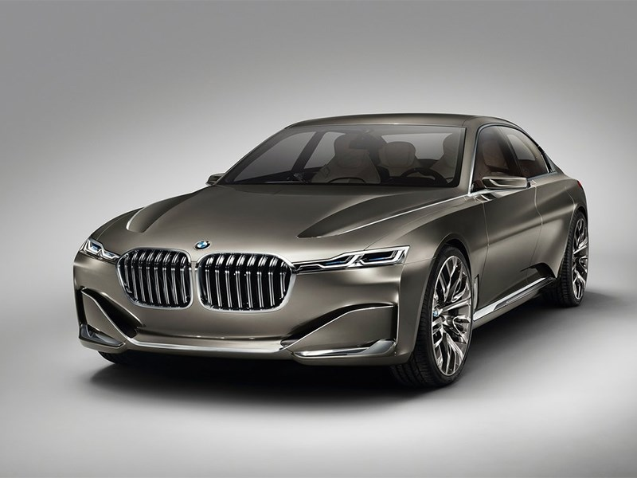
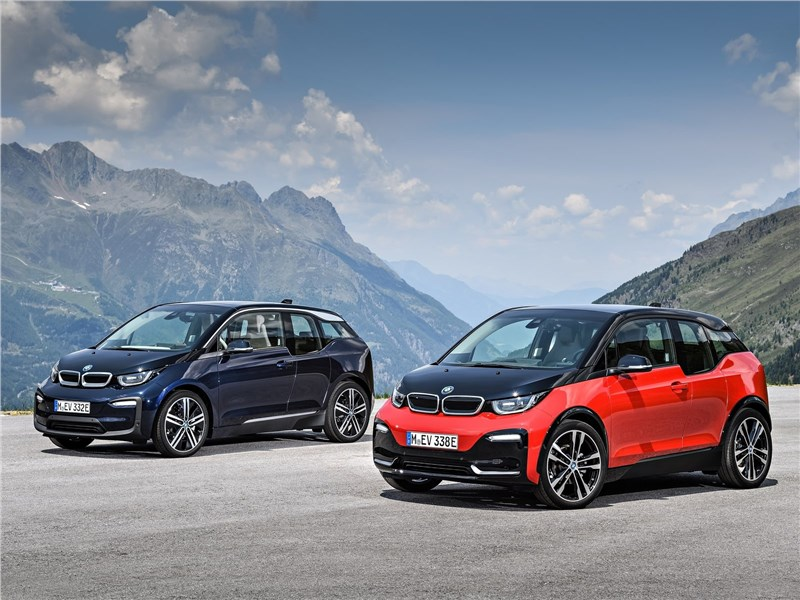
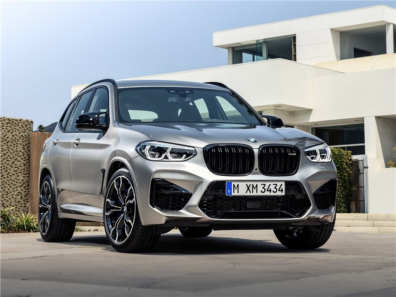
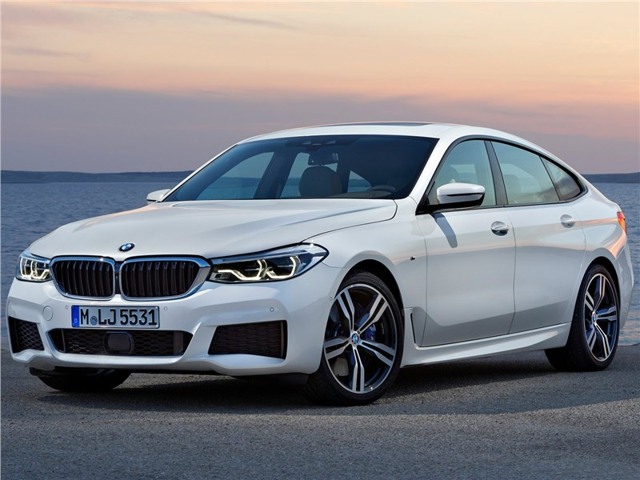

О BMW

BMW - немецкая компания, которая выпускает автомобили и мотоциклы премиум класса. Eе штаб-квартира расположена в городе Мюнхен, а история начинается в 1917 году, когда Карл Рапп и Густав Отто основывают собственный завод по выпуску авиадвигателей
Bayerische Motoren Werke – BMW. Для расширения предприятия в 1928 году компания приобретает автомобильные заводы в Айзенахе. В этом же году она покупает лицензию на производство экономичных машин Dixi. В 70-х годах конструкторский отдел фирмы BMW
разработал двигатель с цифровым управлением, а в 1980 году он впервые внедряет систему ABS. С 1988 года начинается производство первого немецкого родстера, оснащенного 12-цилиндровым мотором. На сегодняшний день компания выпускает
высококачественные добротные автомобили, которые популярны не только на родине, но и по всему миру. Сегодня машины этого концерна стали символом немецкого качества и надежности.

Значимые даты в истории BMW
- 1951 — BMW производит свой первый послевоенный автомобиль — 501.
- 1954 — BMW становится чемпионом мира в гонках мотоциклов с колясками и удерживает мировое первенство следующие двадцать лет.
- 1955 — Отделение BMW Triebwerk GmbH возвращается к жизни. Компания ориентируется на традиции производства авиамоторов. Следующим шагом на пути к успеху стало изменение политики компании BMW с целью популяризации своей продукции у среднего класса. А первым массовым автомобилем в послевоенные годы стала BMW Isetta. Идея создания миниатюрной машины принадлежала итальянской компании Iso, а созданный ей прототип кузова был куплен немцами.
- 1956 — Спортивные автомобили моделей 503 и 507.
- 1959 — Модель 700 стала первым большим серийным успехом для автомобилей BMW. Компания BMW выставляется на продажу.
- 1975 — В эти годы появилась первая «тройка» в истории BMW, она была выпущена в кузове Е21.
- 1994 — Запущен завод BMW в Спартанберге. Открыт 16-й филиал BMW de Mexico S.A., создано торговое представительство в Пекине.
- 1995 — Презентация легендарного BMW Z8. Автомобиль становится звездой кинематографа и снимается в фильме о Джеймсе Бонде.
- 1999 — На детройтском автосалоне проходит презентация нового полноприводного внедорожника BMW X5.
- 2013 — Проходит презентация электромобиля BMW i3 и гибрида i8.
